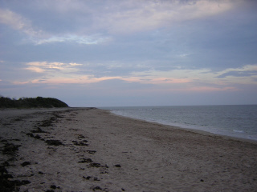
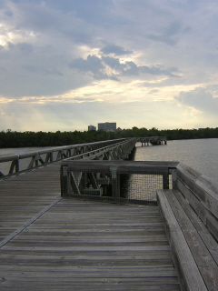

Map created by GPSVisualizer.com
|
Tracks:
- McArthurMapData |
|  |
| McArthur Park is a little oasis of wilderness right here in town. If I leave work when it is still light outside, I can be here, walking on the beach, within 10 minutes. Aaaahhhhhhh. |
|  |